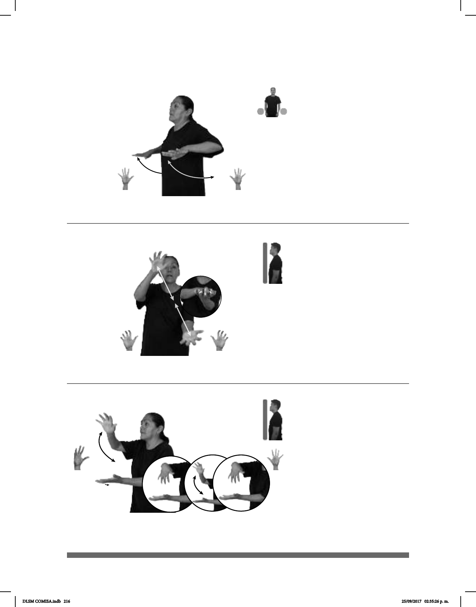

216
Seña: SS
5.1
Las palmas inician
hacia abajo y terminan hacia adentro.
A la altura del abdomen.
Los brazos de mueven
formando un arco hacia atrás mientras
las manos se mueven de adelante hacia
adj. Persona que actúa
con temor o sin asumir su responsabili-
dad ante una amenaza o frente a ciertos
hechos.
(5-G 70) Cobarde
_______________neg_
MONTAÑA RUSA CL: B
subir-baja
pro-TÚ COBARDE NO
Súbete a la montaña rusa, no seas cobarde.
Seña: SS
MD y MB 5.18
Palmas hacia el centro.
A la altura del pecho.
Las manos se encuentran y
se tocan frente a frente.
sust. m. Reptil que alcanza de
4 a 5 m de largo cubierto de escamas
durísimas de color verdoso. Tiene el hocico
muy largo y lleno de dientes, las patas de
atrás palmeadas, y la cola comprimida.
Vive en los ríos, nada con mucha rapidez
y es temible por su voracidad
Seña: SB
MD 5.2, MB 5.1
MD la palma inicia hacia
abajo y termina hacia adentro. MB palma
hacia arriba.
MD a la altura del pecho. MB
a la altura del abdomen.
La MD se mueve de
muñeca.
v. tr. Reunir cosas de una
misma clase o que tienen alguna relación
entre sí generalmente guardándolas con
cierto orden.
(5-G 71)
(5-G 72)
__¡ !_
COCODRILO el
objeto
-ATRAPAR-a-el
objeto
VENADO YA, POBRE
El cocodrilo atrapó al venado, ¡pobre!
JUGUETE CARRO pro-YO GUSTAR COLECCIONAR
Me gusta coleccionar carros de juguete.
DLSM COMISA.indb 216 25/09/2017 02:35:26 p. m.